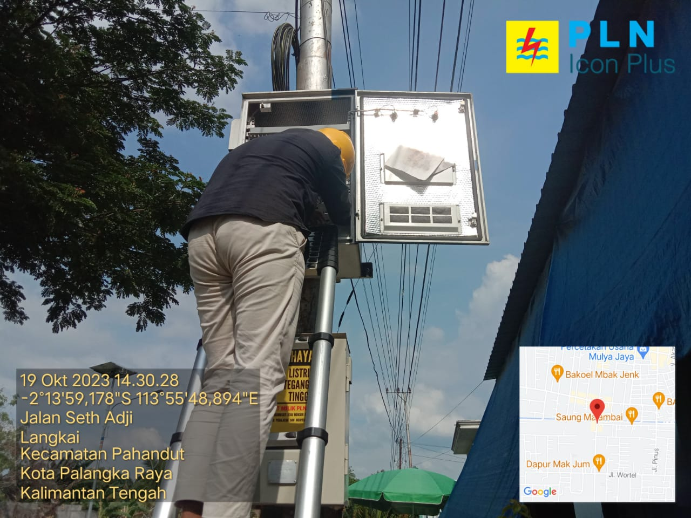
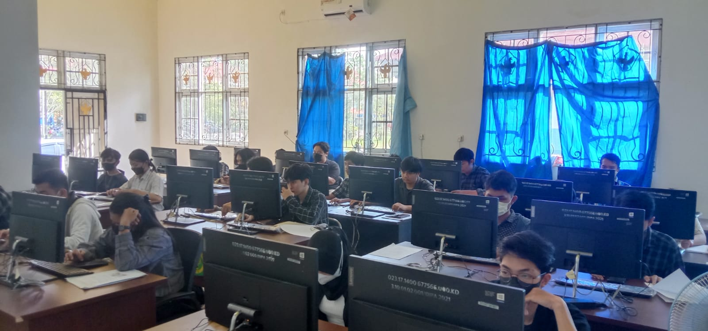

Projects & Experiences Gallery

Internship Experience at PLN Icon Plus
Installing and activating devices on PLN electricity poles.

Nakayaanni Hotel Website Project
Create an individual website to fulfill the project assignment for the Web and Mobile Programming 1 course by applying HTML, CSS, Bootstrap, JavaScript, PHP and MySQL Database

Ratu Ayu Website Project
Create a website in groups to fulfill the Database Administration course project assignment by applying HTML, CSS, Bootstrap, JavaScript, PHP and MySQL Database.

Lab Assistant Experience in Object Oriented Programming courses
Become a lab assistant using teaching materials based on teaching modules that teach about using Alice 3 applications, Greenfoot applications and implementing OOP using the Java language.